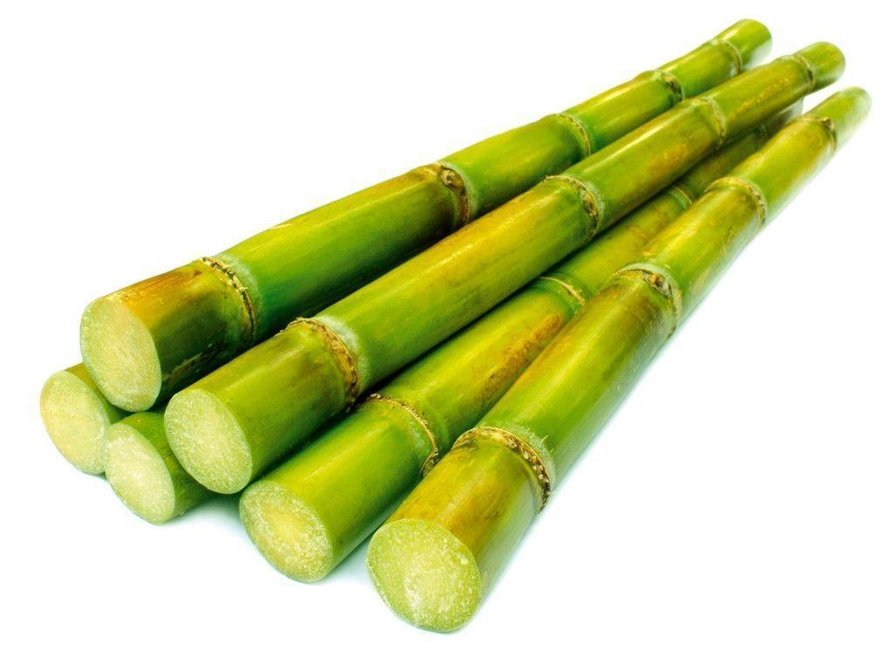
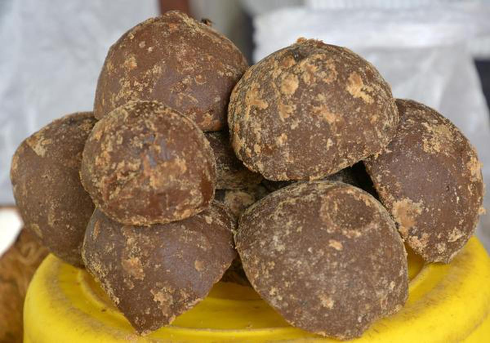

|  |
Manigandan RajendiranM.A. [Teacher Training] Jaggery Business, Eggoor |
 |
Sugarcane is grown chiefly in the main season (December - May) in the entire State. In parts of Tiruchirapalli, Perambalur, Karur, Salem, Namakkal and Coimbatore districts, it is also raised during the special season (June - September).
Jaggery is a traditional cane sugar consumed in the Indian Subcontinent, Southeast Asia, and Africa. It is a concentrated product of cane juice and often date or palm sap without separation of the molasses and crystals, and can vary from golden brown to dark brown in colour.
It contains up to 50% sucrose, up to 20% invert sugars, and up to 20% moisture, with the remainder made up of other insoluble matter, such as wood ash, proteins, and bagasse fibres.
Jaggery making is a simple process comprising crushing of sugarcane for juice extraction, filtration and boiling of juice for concentration and then cooling and solidifying to give jaggery blocks. The juice is extracted in conventional crusher; this is then filtered and boiled in shallow iron pans. During boiling, chemical bleaching agents are added to clean the juice and the extraneous matter is constantly removed to give a bright golden colour.
The boiled juice is then left to cool in iron/ Aluminum pots to form the jaggery blocks. The size of these moulds is specific and depends on the weight of the block of jaggery varying from 1kg onwards. The blocks are packed in jute cloth and dispatched. The yield rate of jaggery is about 10%, 100kg of sugarcane yields 10kg of jaggery
A quarter-cup serving of jaggery contains:
Calories: 100
Protein: Less than 1 gram
Fat: Less than 1 gram
Carbohydrates: 26 grams
Fiber: Less than 1 gram
Sugar: 24 grams
Jaggery also contains:
Calcium
Magnesium
Potassium
Phosphorus
Jaggery is an excellent source of iron for a plant product. A single serving may contain nearly ten percent of your required iron intake for the day. Iron is critical for supporting healthy blood cells. Getting enough iron in your diet can help you feel less tired and improve muscular function.
R. Manigandan, S/O P.Rajendiran
Samachikottai, Eggoor
Telphone No.: +91 9751006007 [Call Me]